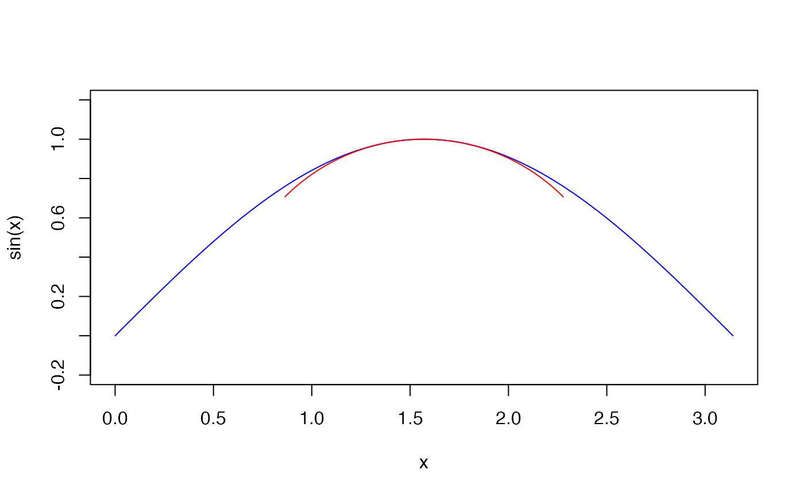

DrawArc.RdDraw one or more elliptic (or circular) arcs from theta.1 to theta.2 on an existing plot using classic graphics.
DrawArc(x = 0, y = x, rx = 1, ry = rx, theta.1 = 0, theta.2 = 2*pi, nv = 100, col = par("col"), lty = par("lty"), lwd = par("lwd"), plot = TRUE)
| x, y | a vector (or scalar) of xy-coordinates of the center(s) of the arc(s). |
|---|---|
| rx | a scalar or a vector giving the semi-major axis of the ellipse for the arc(s) |
| ry | a scalar or a vector giving the semi-minor axis of the ellipse for the arc(s). Default is radius.x which will result in a circle arc with radius.x. |
| theta.1 | a scalar or a vector of starting angles in radians. |
| theta.2 | a scalar or a vector of ending angles in radians. |
| nv | number of vertices used to plot the arc. Scalar or vector. |
| col | color for the arc(s). Scalar or vector. |
| lty | line type used for drawing. |
| lwd | line width used for drawing. |
| plot | logical. If |
All parameters are recycled if necessary.
Be sure to use an aspect ratio of 1 as shown in the example to avoid distortion.
DrawArc invisibly returns a list of the calculated coordinates for all shapes.
Andri Signorell <andri@signorell.net>
DrawArc(x = pi/2, y = 0, rx = 1, theta.1 = pi/4, theta.2 = 3*pi/4, col="red")